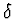
be a derivation operator and let R be a differential ring, i.e. a commutative ring with unit and a derivation acting on it, such that the field of rational numbers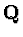
is contained in R.A differential field F is a field, which is also a differential ring. Let CR={
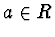
: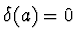
} be the ring of constants of R and let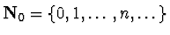
.
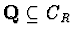
because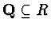
.
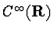
, R=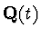
, R=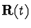
and R=field of the meromorphic functions on a domain of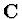
with the usual derivation =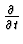
are differential rings. R=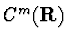
for all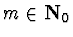
is not a differential ring.If
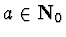
, then order of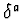
is ord( )=a.
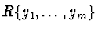
=R[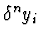
: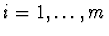
and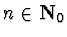
] is the differential ring of the differential polynomials in the differential indeterminates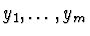
with coefficients in the differential ring R.If
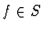
, then order of f is ord(f)=max{ : f contains a power product in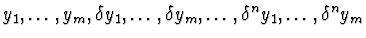
with nonzero coefficient }.
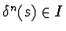
for all and all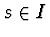
. If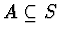
, then [A]=(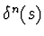
: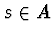
, ) denotes the smallest differential ideal containing A.Let R be a differential ring of functions in the independent variable t, let = and let y=y(t) be a differential indeterminate. y(n)=
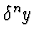
is the derivative of order n of ywith respect to t for all positive integers n, while y(0)=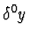
=y.So an ordinary algebraic differential equation in m dependent variables with coefficients in R is nothing else than the equality
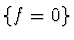
for some differential polynomial f in S.